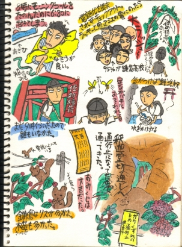

神奈川かまくら篇3  鎌倉・・・というと、私は鈴木清順監督の「チゴイネルワイゼン」が浮かばずにはいられない。 この映画の重要なポイントとなるロケ地が釈迦堂切通しで、はじめてここに訪れたときには、もう感動感動！！「そう！ここよ！ここ！」とカメラのシャッターを何度も切ったのだが、現像してみると現場の感動を感じない。 行って見てわかる感動っす。でも私だけかも・・・。
神奈川かまくら篇3

鎌倉・・・というと、私は鈴木清順監督の「チゴイネルワイゼン」が浮かばずにはいられない。 この映画の重要なポイントとなるロケ地が釈迦堂切通しで、はじめてここに訪れたときには、もう感動感動！！「そう！ここよ！ここ！」とカメラのシャッターを何度も切ったのだが、現像してみると現場の感動を感じない。 行って見てわかる感動っす。でも私だけかも・・・。